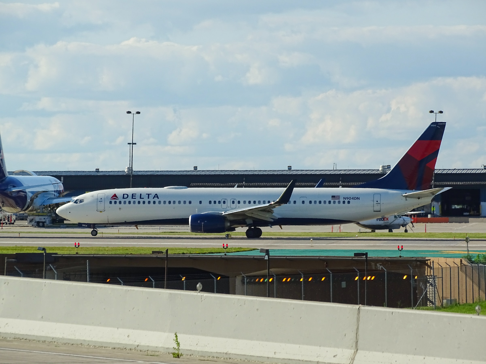

Limba:
Despre noi
AirTramsClub e un mini-website care doreste sa aduca stiri interesante, de calitate buna, cu videoclipuri si explicatii.
"Echipa" AirTramsClub e formata dintr-o familie cu un copil extrem de pasionat de avioane si tramvaie. Defapt, de aceea am si facut website-ul:)
Familia m-a sustinut si ma sustine in continuare in pasiunea mea, motiv pentru care ii consider ca facand parte din echipa AirTramsClub.
Daca va intrebati de unde am invatat sa fac site-uri web? Simplu. Pe Facebook fusese o reclama unde scria "Te invatam sa faci site-uri web uimitoare fara cunostinte". Acel site se numea CodeBerry School. Si asa in 3 luni (adica din 20 martie 2020 pana in 20 iunie 2020) am invatat sa fac site-uri web uimitoare. Intr-adevar. Si din 20 iunie pana in 4 iulie 2020 am lucrat din greu sa termin acest site web. Si chiar am terminat:). In 5 iulie 2020 website-ul AirTramsClub a fost publicat pe internet.